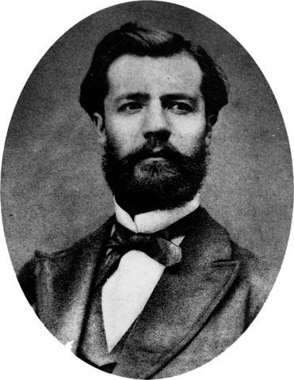

Proceso administrativo
¿Qué es el proceso administrativo?
El proceso administrativo es un conjunto de funciones administrativas dentro de una organización u empresa que buscan aprovechar al máximo los recursos existentes de forma correcta, rápida y eficaz.
El proceso administrativo se compone de cuatro etapas elementales: planeación, organización, ejecución y control. A través de ellas, los miembros de una empresa buscan alcanzar las metas u objetivos propuestos.

Origen
El proceso administrativo fue detallado por Henry Fayol, ingeniero francés, que describió sus fases y características en su obra: “Administración industrial y general” (1916).

Fayol se basó en su experiencia dentro de la compañía de hierro y carbón francesa, Compagnie Commentry Fourchambault et Decazeville (allí ocupó puestos técnicos y luego gerenciales desde 1888 a 1918); y en sus estudios en el campo de la administración. Para Fayol, el factor humano es la pieza fundamental en el funcionamiento de las empresas y el cumplimiento de metas y objetivos. En “Administración industrial y general” estableció las seis funciones de toda empresa industrial (técnicas, administrativas, contables, comerciales, financieras, de seguridad) y definió a las funciones administrativas como las encargadas de coordinar y sincronizar a las otras cinco funciones. Dentro de las funciones administrativas desarrolló las cuatro etapas para un proceso administrativo eficiente y correcto.Además, describió catorce principios para aplicar dentro de las empresas: jerarquía de mando, orden, disciplina, equidad, división del trabajo, justa remuneración, trabajo en equipo, iniciativa, estabilidad del personal, unidad de dirección, centralización, subordinación del interés particular al general, autoridad y responsabilidad y unidad de mando.Su obra funciona como base de muchas organizaciones y empresas y se centra en tres aspectos fundamentales: la aplicación del proceso administrativo, los principios técnicos y la división del trabajo.
Importancia
El proceso administrativo funciona como una guía simple y rigurosa mediante la cual una empresa u organización intenta lograr los objetivos propuestos de la forma más eficiente.La aplicación de este proceso administrativo permite aprovechar la mano de obra y los recursos técnicos y materiales que posee una empresa. El proceso administrativo permite controlar de manera organizada los recursos y disponerlos de manera eficiente.Este proceso puede ser aplicado en cualquier tipo de empresa y cada uno de los miembros de la organización debe conocer su rol dentro del proceso. La planificación y organización de los procesos administrativos suele ser el deber de los puestos jerárquicos cuyas funciones son menos técnicas y más administrativas.